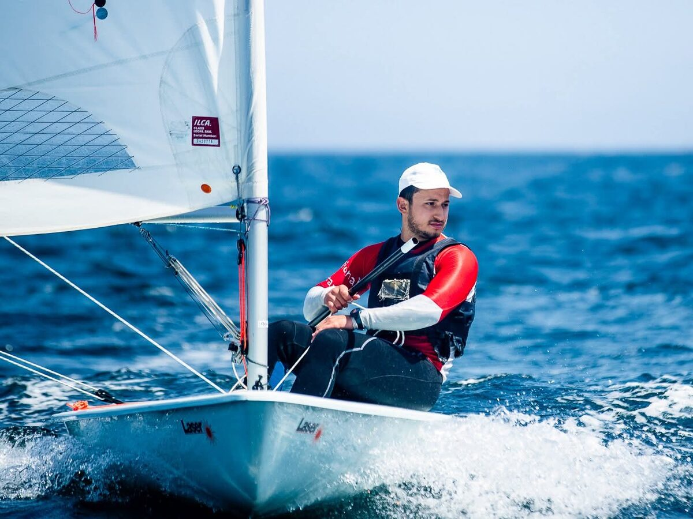

News03.2026 Joined the Tübingen AI Center as a visiting researcher with the Kühne Group, working on token compression for omni-modal foundation models. 02.2026 Released VulnScout-C — a 693M-parameter MoE transformer for C-code vulnerability detection, outperforming GPT-4o on CASTLE. Under submission at IEEE TDSC. 02.2026 Won 2nd place at GOAT_AI 1.0 (monocular depth estimation) with a 1M-parameter student distilled from Depth Anything V2-Small. 01.2026 TTFT-Aware Graph Chain-of-Thought accepted at MEDES 2025 (Springer). 01.2026 Earned a Silver Medal at the AIMO Progress Prize 3 — Apriel-1.6 + DeepConf + batched Tool-Integrated Reasoning. 06.2025 Joined Tanit Healthcare Technologies (Paris) as a research engineer, leading post-training of medical Large Reasoning Models. 10.2025 Shipped RoBee — a multi-agent neuro-symbolic pipeline for causal graph construction — during my HBKU / QCRI internship. 06.2025 CSG-Chat presented as a poster at QCRI-SIP 2025. Featured Research
WritingNotes on efficient reasoning, post-training, and the engineering of intelligence.
Open Source
Competitions & Activities
 BeyondWhen I'm not training models, I race sailboats. I'm a member of the Tunisian national sailing team — a parallel kind of optimization: read the conditions, find the lift, sail the cleanest line. The wind, like a training run, doesn't care about your plans. You show up, you read it, you move. Sail fast, optimize faster. ContactOpen to research collaborations, internships, and conversations about efficient reasoning, vision-language models, and medical AI. bechir.dardouri@ept.ucar.tn |